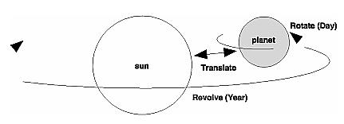
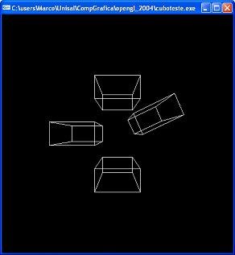
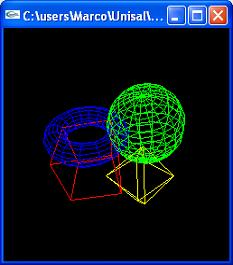

planets.c. Desenha um planeta e seu movimento em torno do sol.
Programa planets.c

cubo.c. Desenha quatro cubos na tela. Rotaciona em 25 graus somente o segundo cubo a ser desenhado.
Programa cubo.c

objects.c. Desenha um cubo, esfera, torus e um octaedro (flat e wire).
Programa objects.c
